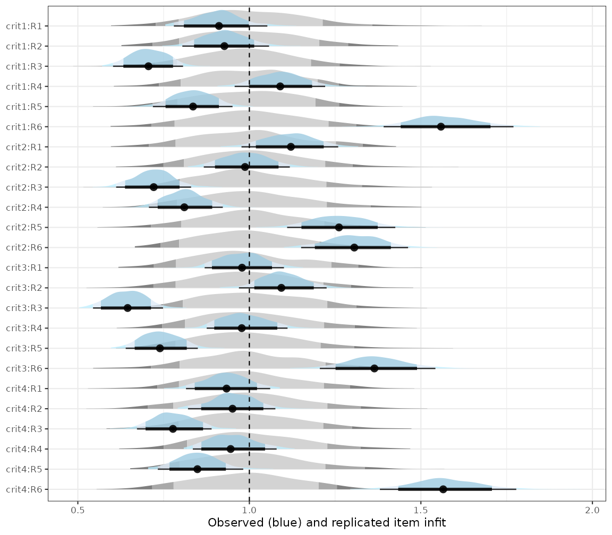
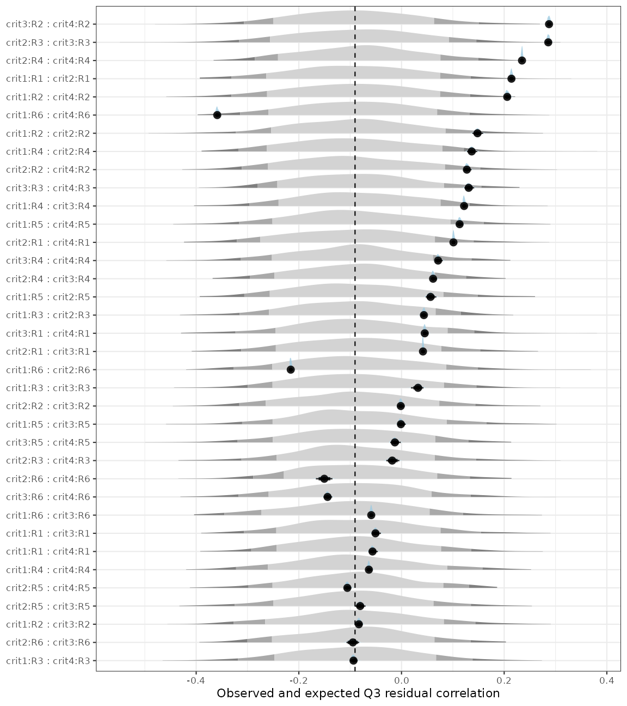
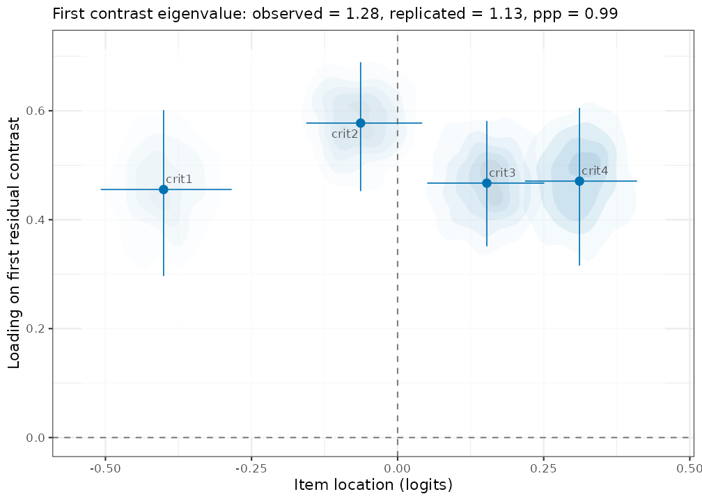

Many-Facet Rasch Models with easyRaschBayes
Source:vignettes/mfrm-rasch-analysis.Rmd
mfrm-rasch-analysis.RmdOverview
In many assessments a response is not given by the person but by a rater who scores the person, for example examiners grading essays on several criteria or clinicians rating patients on a structured interview. The rating then depends on the person, the item (criterion) and the rater. The many-facet Rasch model (Linacre 1989; Eckes 2015) adds the rater as a third facet, next to persons and items:
\text{logit} = \theta_{\text{person}} - \delta_{\text{item}} - \lambda_{\text{rater}} - \tau_k
where \lambda is the severity of the rater and \tau_k are the thresholds of the rating scale. A severe rater gives lower ratings to everyone, so the same person gets a different score depending on who rated them. The model separates this from the person’s location, as long as the raters are linked through persons they have in common.
In brms the rater is one more term in the formula. The
functions of easyRaschBayes work on these models through a
facet_var argument:
-
facet_parameters()gives rater severity with fair averages. -
infit_statistic()anditem_restscore_statistic()check the fit of each item x rater combination, andinfit_statistic()pools the fit by rater or by item. -
q3_statistic()andplot_residual_pca()look for dependence between ratings, for example a halo effect.
The name facet_var is neutral, since the third facet can
be something other than raters, for example tasks or occasions. This
vignette uses raters throughout. It assumes the PCM vignette, where the fit
statistics are explained in more detail.
Data and rating design
The data are simulated: 150 persons rated on four criteria
(crit1 to crit4) by six raters
(R1 to R6). Ratings have four categories,
coded 1 to 4 as the acat family expects. Each person was
rated by three of the six raters, so every person has 12 of the 24 item
x rater combinations, which gives 1,800 ratings. The data also hold a
dichotomous version of the same ratings, pass. Since the
data are simulated, we know which raters behave badly. Those departures
are revealed at the end, after the diagnostics have had their turn.
d <- readRDS("fits/mfrm_data.rds")
head(d)
#> id item rater rating pass
#> 1 1 crit1 R1 3 1
#> 2 1 crit2 R1 4 1
#> 3 1 crit3 R1 3 1
#> 4 1 crit4 R1 3 1
#> 5 1 crit1 R2 4 1
#> 6 1 crit2 R2 3 1
count(d, rater)
#> rater n
#> 1 R1 300
#> 2 R2 300
#> 3 R3 300
#> 4 R4 300
#> 5 R5 300
#> 6 R6 300The rater severities can only be compared if the raters are linked by
persons they have rated in common. A design in which raters
R1 to R3 rate one group of persons and
R4 to R6 another cannot tell a severe group of
raters from a group of persons with lower locations. The counts of
shared persons for each pair of raters show the links:
rater_by_person <- xtabs(~ id + rater, distinct(d, id, rater))
crossprod(rater_by_person)
#> rater
#> rater R1 R2 R3 R4 R5 R6
#> R1 75 25 25 50 25 25
#> R2 25 75 25 25 50 25
#> R3 25 25 75 25 25 50
#> R4 50 25 25 75 25 25
#> R5 25 50 25 25 75 25
#> R6 25 25 50 25 25 75The diagonal is the number of persons each rater rated (75), and
every pair of raters shares 25 or 50 persons, so the design is
connected. The facet_var functions check this, and warn if
the raters or items fall into groups that the persons do not link. That
check also catches designs in which some items are only ever scored by
some raters.
Models
We fit three rating scale models. The first adds the rater as a
random intercept to a rating scale model. The second adds a person x
rater term, (1 | rater:id), which allows a rater’s overall
impression of a person to carry over to all criteria for that person.
This is a halo effect, a rater’s tendency to give a person similar
ratings on distinct criteria (Myford and Wolfe 2004). It
makes ratings by the same rater of the same person dependent beyond what
the person location explains. Wang and Wilson (2005) model this dependence
with a random person x rater effect, with a separate variance for each
rater, and describe it as variation in the rater’s severity across
persons. The third gives each rater their own rating scale with
thres(gr = rater), so that raters can differ in how they
use the categories, not only in severity.
contrasts(d$item) <- contr_sum_zero(levels(d$item))
priors <- prior(normal(0, 3), class = "Intercept") +
prior(normal(0, 1.1547), class = "b") +
prior(exponential(1), class = "sd")
fit_rsm <- brm(
rating ~ 1 + item + (1 | rater) + (1 | id),
data = d, family = acat(), prior = priors,
chains = 4, cores = 4, iter = 2000
)
fit_rsm_halo <- brm(
rating ~ 1 + item + (1 | rater) + (1 | id) + (1 | rater:id),
data = d, family = acat(), prior = priors,
chains = 4, cores = 4, iter = 2000
)
fit_rsm_scales <- brm(
rating | thres(gr = rater) ~ 1 + item + (1 | id) + (1 | rater:id),
data = d, family = acat(), prior = priors,
chains = 4, cores = 4, iter = 2000
)The models were fitted once with
vignettes/fit-mfrm-vignette-models.R in the package’s
GitHub repository and are loaded here.
fit_rsm <- readRDS("fits/fit_mfrm_rsm.rds")
fit_rsm_halo <- readRDS("fits/fit_mfrm_rsm_halo.rds")
fit_rsm_scales <- readRDS("fits/fit_mfrm_rsm_scales.rds")Raters are a random effect here, which suits six raters drawn from a
larger pool. With few raters, or raters of interest in themselves, the
rater can also be a fixed effect,
rating ~ 1 + item + rater + (1 | id).
facet_parameters() handles both.
Sum-to-zero coding for the items
The four criteria are fixed effects. With an intercept,
brms codes them with three coefficients, by default with
treatment contrasts, where the first criterion is the reference. A prior
on those coefficients is then a prior on differences from
crit1. Sum-to-zero coding with contr.sum()
looks like a remedy, but it is unbalanced. The last level is minus the
sum of the others, so a normal(0, s) prior on each
coefficient gives the first three criteria prior SD s and the last s\sqrt{3}.
contr_sum_zero() gives orthonormal sum-to-zero
contrasts, the same coding as Stan’s sum_to_zero_vector
(Morris
2025). Every level then gets the same prior SD, s\sqrt{(K-1)/K} for K levels, so s =
\sqrt{4/3} \approx 1.15 gives SD 1 for each of the four criteria.
Two prior-only fits of the same model, one coded each way with the same
prior on the coefficients, show the difference:
prior_sum <- readRDS("fits/prior_contr_sum.rds")
prior_ozs <- readRDS("fits/prior_contr_ozs.rds")
# Prior SD of each criterion effect: coefficients times the contrasts
level_sd <- function(fit, contr) {
b <- as_draws_df(fit) %>%
as_tibble() %>%
select(starts_with("b_item")) %>%
as.matrix()
apply(b %*% t(contr), 2, sd)
}
crit <- levels(d$item)
rbind(
contr.sum = level_sd(prior_sum, contr.sum(crit)),
contr_sum_zero = level_sd(prior_ozs, contr_sum_zero(crit))
) %>%
round(2)
#> crit1 crit2 crit3 crit4
#> contr.sum 1.16 1.15 1.16 2.05
#> contr_sum_zero 1.02 0.99 0.99 1.00The posterior is affected little here, with 1,800 ratings, but with
weak data the coding decides which item gets the widest prior. The
facet_var functions and item_parameters() read
the contrasts stored on the factor, so any coding gives the same item
and rater locations.
Rater severity and fair averages
facet_parameters() reports one row per rater: the number
of ratings, the observed average rating, the fair average, and the
rater’s location (severity). The location has the same sign as item
difficulty, so positive values mean a severe rater who gives lower
ratings. Locations are centred to a mean of 0 in each draw, so they do
not depend on how the rater effect is coded.
sev <- facet_parameters(fit_rsm_halo, facet_var = rater)
sev$summary
#> # A tibble: 6 × 11
#> rater n observed_avg fair_avg fair_avg_lower fair_avg_upper location
#> <chr> <int> <dbl> <dbl> <dbl> <dbl> <dbl>
#> 1 R1 300 2.85 2.85 2.72 2.98 -0.568
#> 2 R2 300 2.51 2.53 2.41 2.66 -0.0469
#> 3 R3 300 2.54 2.51 2.38 2.63 -0.0019
#> 4 R4 300 2.45 2.47 2.34 2.60 0.0542
#> 5 R5 300 2.36 2.34 2.22 2.47 0.260
#> 6 R6 300 2.31 2.32 2.20 2.45 0.302
#> # ℹ 4 more variables: se <dbl>, hdci_lower <dbl>, hdci_upper <dbl>, n_eff <dbl>
sev$facet_sd
#> # A tibble: 1 × 4
#> mean sd hdci_lower hdci_upper
#> <dbl> <dbl> <dbl> <dbl>
#> 1 0.404 0.164 0.175 0.761The fair average is the expected rating each rater would give a person at the mean location of the sample, averaged over the four criteria. It puts the raters on the response scale. In this design all raters rate a similar mix of persons, so the fair and observed averages are close. When raters see different persons, for example when one rater gets all the weak essays, they can differ a lot, and the fair average is the one to compare.
R1 is the most lenient rater, with ratings about half a
category higher than R6 and R5, the most
severe. R2, R3 and R4 are in the
middle and their intervals overlap. The SD of the rater effects
(facet_sd) is about 0.4 logits, against about 0.9 for
persons, so a person’s score would change noticeably with the rater.
With draws = TRUE, facet_parameters() also
returns the location draws, raters by draws, for
RMUreliability(). The result says how reliably the raters
are separated by severity, so a high value means that raters differ,
which is not a sign of good rating. With six raters it is also very
uncertain.
sev_draws <- facet_parameters(fit_rsm_halo, facet_var = rater, draws = TRUE)
RMUreliability(sev_draws$draws_matrix)
#> rmu_estimate hdci_lowerbound hdci_upperbound .width .point .interval
#> 1 0.9146404 0.7946204 0.9954878 0.95 mean hdciRater fit
Each item x rater combination (a cell) is treated as an item, and the functions run as for an ordinary Rasch model, conditional on each person’s total score. A person rated by three raters has 12 cells, and the cells they were not rated in count as missing responses.
Infit by rater and by item
With by = "facet" the squared residuals and variances
are summed over all of a rater’s ratings before dividing, so each rater
gets one infit value. by = "item" does the same for the
criteria.
infit_rater <- infit_statistic(fit_rsm_halo, facet_var = rater,
by = "facet", ndraws_use = 500)
#> `infit_statistic()`: the model has a (1 | rater:id) term. The conditional method treats its effects as known in each draw, so the results describe fit after this dependence is accounted for. In simulations infit then flagged misfit less often than the nominal level (about 2% of fitting cells at .05 instead of 5%), so some misfit may be missed.
infit_post(infit_rater)$summary
#> # A tibble: 6 × 4
#> rater infit_obs infit_rep infit_ppp
#> <fct> <dbl> <dbl> <dbl>
#> 1 R1 0.983 1.00 0.428
#> 2 R2 0.99 0.988 0.488
#> 3 R3 0.712 1.00 0
#> 4 R4 0.957 0.999 0.302
#> 5 R5 0.921 1.00 0.156
#> 6 R6 1.45 1.00 1
infit_item <- infit_statistic(fit_rsm_halo, facet_var = rater,
by = "item", ndraws_use = 500)
#> `infit_statistic()`: the model has a (1 | rater:id) term. The conditional method treats its effects as known in each draw, so the results describe fit after this dependence is accounted for. In simulations infit then flagged misfit less often than the nominal level (about 2% of fitting cells at .05 instead of 5%), so some misfit may be missed.
infit_post(infit_item)$summary
#> # A tibble: 4 × 4
#> item infit_obs infit_rep infit_ppp
#> <fct> <dbl> <dbl> <dbl>
#> 1 crit1 1.01 1.00 0.556
#> 2 crit2 1.03 0.996 0.692
#> 3 crit3 0.965 0.998 0.33
#> 4 crit4 1.00 0.996 0.538Since the model has a halo term, the functions print a message. The halo effects are treated as known in each draw, so fit is assessed after the halo is accounted for. In simulations infit then flagged misfit less often than the nominal level (about 2% of fitting cells at .05 instead of 5%, see the last section). Values far from 1 are therefore clear signals, and some misfit may be missed.
Two raters stand out. R6 underfits, with infit around
1.4 and infit_ppp 1: R6 gives ratings that
vary more than the model expects, which is what an inconsistent rater
looks like. R3 overfits, with infit around 0.7 and
infit_ppp 0. R3’s ratings vary less than
expected. In operational data this often goes with central tendency,
overuse of the middle categories (Myford and Wolfe 2003, 2004). Myford and Wolfe
(2004) also show that
central tendency can give infit above 1 when the criteria differ in
difficulty, so the fit value alone does not tell which rater effect is
present. The four criteria fit, pooled over raters.
Infit and item-restscore by cell
The default by = "cell" gives one row per item x rater
combination. The output has the cell label and separate item and rater
columns, which makes it easy to filter or sort.
infit_cell <- infit_statistic(fit_rsm_halo, facet_var = rater,
ndraws_use = 500)
#> `infit_statistic()`: the model has a (1 | rater:id) term. The conditional method treats its effects as known in each draw, so the results describe fit after this dependence is accounted for. In simulations infit then flagged misfit less often than the nominal level (about 2% of fitting cells at .05 instead of 5%), so some misfit may be missed.
infit_cell_results <- infit_post(infit_cell)
infit_cell_results$summary %>% filter(rater %in% c("R3", "R6"))
#> # A tibble: 8 × 6
#> cell item rater infit_obs infit_rep infit_ppp
#> <fct> <fct> <fct> <dbl> <dbl> <dbl>
#> 1 crit1:R3 crit1 R3 0.706 0.985 0.026
#> 2 crit1:R6 crit1 R6 1.57 1.00 0.996
#> 3 crit2:R3 crit2 R3 0.721 0.999 0.024
#> 4 crit2:R6 crit2 R6 1.31 0.994 0.974
#> 5 crit3:R3 crit3 R3 0.644 1.01 0.006
#> 6 crit3:R6 crit3 R6 1.37 1.00 0.99
#> 7 crit4:R3 crit4 R3 0.779 0.992 0.102
#> 8 crit4:R6 crit4 R6 1.57 0.988 1
infit_cell_results$plot
Figure 1. Infit for each item x rater combination
The pattern is consistent across criteria: all four R6
cells underfit and all four R3 cells overfit. A rater
problem shows up across all of that rater’s cells, while an item problem
would show up across the raters in one item’s cells. Single cells of
other raters are also away from 1, for example crit2:R5
above and crit3:R5 below, but with no pattern across
criteria. Each cell holds only 75 ratings.
The item-restscore association gives the same picture from another angle:
rest_cell <- item_restscore_statistic(fit_rsm_halo, facet_var = rater,
ndraws_use = 500)
#> `item_restscore_statistic()`: the model has a (1 | rater:id) term. The conditional method treats its effects as known in each draw, so the results describe fit after this dependence is accounted for.
item_restscore_post(rest_cell)$summary %>% arrange(ppp)
#> # A tibble: 24 × 8
#> cell item rater gamma_obs gamma_exp gamma_diff ppp p_adj
#> <fct> <fct> <fct> <dbl> <dbl> <dbl> <dbl> <dbl>
#> 1 crit4:R6 crit4 R6 0.175 0.439 -0.264 0 0.014
#> 2 crit3:R2 crit3 R2 0.393 0.495 -0.102 0.052 0.946
#> 3 crit3:R6 crit3 R6 0.35 0.44 -0.09 0.08 0.982
#> 4 crit1:R6 crit1 R6 0.349 0.441 -0.092 0.086 0.996
#> 5 crit2:R1 crit2 R1 0.482 0.525 -0.042 0.22 1
#> 6 crit2:R6 crit2 R6 0.4 0.441 -0.041 0.224 1
#> 7 crit3:R3 crit3 R3 0.386 0.412 -0.026 0.282 1
#> 8 crit1:R4 crit1 R4 0.458 0.473 -0.015 0.318 1
#> 9 crit2:R5 crit2 R5 0.48 0.503 -0.024 0.328 1
#> 10 crit3:R4 crit3 R4 0.466 0.477 -0.011 0.344 1
#> # ℹ 14 more rowsThe R6 cells have the weakest association with the rest
score, and for crit4 it is far below the expected value
(gamma_obs 0.18 against 0.44). The other cells are close to
their expected values after adjustment for the 24 cells
(p_adj).
Halo: dependence between ratings by the same rater
A halo effect makes a rater’s ratings of the same person on different
criteria more similar than the person location explains. Without a halo
term in the model, this shows as positive residual correlations between
cells that share the rater. q3_statistic() with
facet_var computes Q3 for every pair of cells that some
person has in common, and the pair_type column says whether
the two cells share the rater ("same rater"), the item
("same item"), or neither.
q3_rsm <- q3_statistic(fit_rsm, facet_var = rater, ndraws_use = 500)
q3_rsm_results <- q3_post(q3_rsm)
q3_rsm_results$summary %>%
group_by(pair_type) %>%
summarise(pairs = n(), q3_obs = mean(q3_obs), q3_rep = mean(q3_rep),
q3_diff = mean(q3_diff))
#> # A tibble: 3 × 5
#> pair_type pairs q3_obs q3_rep q3_diff
#> <chr> <int> <dbl> <dbl> <dbl>
#> 1 neither 180 -0.133 -0.0882 -0.0448
#> 2 same item 60 -0.124 -0.0924 -0.0322
#> 3 same rater 36 0.0243 -0.0905 0.115Without the halo term, the same-rater pairs have a mean observed Q3 of about 0.02, against about -0.09 in replicated data. The other pair types are slightly below their replicated values, which is expected, since residuals given the total score sum to zero, and a positive dependence in some pairs is offset by negative values elsewhere. With the halo term the difference disappears:
q3_halo <- q3_statistic(fit_rsm_halo, facet_var = rater, ndraws_use = 500)
#> `q3_statistic()`: the model has a (1 | rater:id) term. The conditional method treats its effects as known in each draw, so the results describe fit after this dependence is accounted for.
q3_halo_results <- q3_post(q3_halo)
q3_halo_results$summary %>%
group_by(pair_type) %>%
summarise(pairs = n(), q3_obs = mean(q3_obs), q3_rep = mean(q3_rep),
q3_diff = mean(q3_diff))
#> # A tibble: 3 × 5
#> pair_type pairs q3_obs q3_rep q3_diff
#> <chr> <int> <dbl> <dbl> <dbl>
#> 1 neither 180 -0.0954 -0.0884 -0.00697
#> 2 same item 60 -0.0849 -0.0901 0.00518
#> 3 same rater 36 -0.0808 -0.0918 0.0111Read the halo from the mean of the same-rater pairs rather than from
single pairs. Single pairs are noisy: there are 276 pairs, most of them
shared by only 25 persons, and in simulations the adjusted p-value
q3_p_adj rarely flagged a halo of this size (see the last
section). Sorted by the size of the difference, the top of
q3_rsm_results$summary is a mix of pair types with large
positive and negative values. Plotting only the same-rater pairs shows
the halo:

Figure 2. Q3 for the 36 same-rater pairs, model without halo term
Most observed values (points) lie to the right of the centre of their
replicated distributions, which is the overall shift seen in the means.
The pairs of R6 are the exception. R6 rates
inconsistently, so the residuals of R6’s ratings share less
with each other.
Positive Q3 in one rater’s same-rater pairs is not specific to a halo. In simulations, a rater with central tendency had it too, and so did the raters who shared persons with an inconsistent rater, while the inconsistent rater did not. Rater infit tells these cases apart, as described in the last section.
The residual PCA looks for the same thing in another way. With
facet_var, each person x rater combination is one row of
the residual matrix, so a halo shows as a first component on which all
criteria load in the same direction.
pca_rsm <- plot_residual_pca(fit_rsm, facet_var = rater, ndraws_use = 500)
pca_rsm$eigenvalue
#> # A tibble: 1 × 6
#> eigenvalue_obs eigenvalue_rep eigenvalue_diff ppp var_explained_obs
#> <dbl> <dbl> <dbl> <dbl> <dbl>
#> 1 1.28 1.13 0.150 0.99 0.316
#> # ℹ 1 more variable: var_explained_rep <dbl>
pca_rsm$plot
Figure 3. Loadings on the first residual contrast, model without halo term
pca_halo <- plot_residual_pca(fit_rsm_halo, facet_var = rater,
ndraws_use = 500)
pca_halo$eigenvalue
#> # A tibble: 1 × 6
#> eigenvalue_obs eigenvalue_rep eigenvalue_diff ppp var_explained_obs
#> <dbl> <dbl> <dbl> <dbl> <dbl>
#> 1 1.14 1.13 0.00776 0.544 0.281
#> # ℹ 1 more variable: var_explained_rep <dbl>Without the halo term, the first observed eigenvalue is larger than the replicated one in nearly all draws, and all four criteria load positively on the first contrast, which is the halo pattern. With the halo term the observed and replicated eigenvalues are the same. The model comparison agrees, with a clear advantage for the halo model, and the halo SD is estimated at about 0.5 logits:
loo_compare(loo(fit_rsm), loo(fit_rsm_halo))
#> model elpd_diff se_diff p_worse diag_diff diag_elpd
#> fit_rsm_halo 0.0 0.0 NA
#> fit_rsm -23.7 7.1 1.00
VarCorr(fit_rsm_halo)$`rater:id`$sd
#> Estimate Est.Error Q2.5 Q97.5
#> Intercept 0.5074118 0.07118334 0.367036 0.645209The halo term also matters for the rater severities. In simulations, fitting a model without it to data with a halo gave intervals for the severities that were too narrow (see the last section).
Rater-specific rating scales
R3 overfitted in the rating scale model. One explanation
is that R3 uses the categories differently from the other
raters. thres(gr = rater) gives each rater their own
thresholds. The rater’s location is then the mean of their thresholds,
and facet_parameters() adds a table of the thresholds. brms
sets the number of each rater’s thresholds from the categories that
rater used. Here every rater used all four, but if a rater never gives
the top category, set the number in the formula, as in
thres(3, gr = rater), or facet_parameters()
stops.
sev_scales <- facet_parameters(fit_rsm_scales, facet_var = rater)
sev_scales$summary
#> # A tibble: 6 × 11
#> rater n observed_avg fair_avg fair_avg_lower fair_avg_upper location
#> <chr> <int> <dbl> <dbl> <dbl> <dbl> <dbl>
#> 1 R1 300 2.85 2.90 2.78 3.03 -0.568
#> 2 R2 300 2.51 2.51 2.36 2.64 -0.105
#> 3 R3 300 2.54 2.52 2.42 2.61 -0.0014
#> 4 R4 300 2.45 2.49 2.35 2.63 0.0723
#> 5 R5 300 2.36 2.32 2.19 2.47 0.293
#> 6 R6 300 2.31 2.29 2.15 2.44 0.310
#> # ℹ 4 more variables: se <dbl>, hdci_lower <dbl>, hdci_upper <dbl>, n_eff <dbl>
sev_scales$thresholds %>%
select(rater, threshold, location) %>%
pivot_wider(names_from = threshold, names_prefix = "tau_",
values_from = location) %>%
mutate(spread = tau_3 - tau_1)
#> # A tibble: 6 × 5
#> rater tau_1 tau_2 tau_3 spread
#> <chr> <dbl> <dbl> <dbl> <dbl>
#> 1 R1 -1.76 -0.722 0.780 2.54
#> 2 R2 -1.63 0.306 1.01 2.64
#> 3 R3 -2.32 -0.0409 2.35 4.67
#> 4 R4 -1.11 -0.0963 1.43 2.54
#> 5 R5 -1.17 0.323 1.73 2.89
#> 6 R6 -0.871 0.329 1.47 2.34The first and third thresholds of R3 are about 4.7
logits apart, against 2.3 to 2.9 logits for the other raters. Widely
spaced thresholds mean that the middle categories cover more of the
latent variable, so R3 gives the middle categories more
often and the extreme ones less often: central tendency. With a rating
scale of their own, R3 fits:
infit_scales <- infit_statistic(fit_rsm_scales, facet_var = rater,
by = "facet", ndraws_use = 500)
#> `infit_statistic()`: the model has a (1 | rater:id) term. The conditional method treats its effects as known in each draw, so the results describe fit after this dependence is accounted for. In simulations infit then flagged misfit less often than the nominal level (about 2% of fitting cells at .05 instead of 5%), so some misfit may be missed.
infit_post(infit_scales)$summary
#> # A tibble: 6 × 4
#> rater infit_obs infit_rep infit_ppp
#> <fct> <dbl> <dbl> <dbl>
#> 1 R1 0.943 1.00 0.266
#> 2 R2 0.955 1.01 0.294
#> 3 R3 0.948 1.00 0.292
#> 4 R4 0.898 1.00 0.118
#> 5 R5 0.929 0.999 0.224
#> 6 R6 1.36 1.00 1R6 still underfits, since inconsistency is not a matter
of how the categories are used. In simulations, a model with
rater-specific thresholds flagged a rater in about 1% of datasets, by
infit or by Q3, when the raters did not differ. With a central-tendency
rater in the data, the flags for that rater disappeared, and the rater’s
thresholds showed the wider spacing (see the last section).
Rater-specific scales are a way to describe how raters differ, not a
remedy. A rater with central tendency loses information about the
persons, which shows as less spread in their ratings, and whether that
rater should be retrained or their ratings weighted differently is a
decision outside the model.
Dichotomous ratings
For pass/fail ratings the model is the same with the
bernoulli() family, and the functions work in the same
way:
fit_rm_halo <- brm(
pass ~ 1 + item + (1 | rater) + (1 | id) + (1 | rater:id),
data = d, family = bernoulli(), prior = priors,
chains = 4, cores = 4, iter = 2000
)
fit_rm_halo <- readRDS("fits/fit_mfrm_rm_halo.rds")
facet_parameters(fit_rm_halo, facet_var = rater)$summary
#> # A tibble: 6 × 11
#> rater n observed_avg fair_avg fair_avg_lower fair_avg_upper location se
#> <chr> <int> <dbl> <dbl> <dbl> <dbl> <dbl> <dbl>
#> 1 R1 300 0.663 0.669 0.605 0.74 -0.452 0.145
#> 2 R2 300 0.607 0.64 0.569 0.702 -0.319 0.138
#> 3 R3 300 0.58 0.584 0.518 0.654 -0.0772 0.132
#> 4 R4 300 0.53 0.539 0.473 0.614 0.111 0.136
#> 5 R5 300 0.517 0.527 0.454 0.594 0.164 0.135
#> 6 R6 300 0.417 0.428 0.354 0.5 0.572 0.144
#> # ℹ 3 more variables: hdci_lower <dbl>, hdci_upper <dbl>, n_eff <dbl>
infit_rm <- infit_statistic(fit_rm_halo, facet_var = rater, by = "facet",
ndraws_use = 500)
#> `infit_statistic()`: the model has a (1 | rater:id) term. The conditional method treats its effects as known in each draw, so the results describe fit after this dependence is accounted for. In simulations infit then flagged misfit less often than the nominal level (about 2% of fitting cells at .05 instead of 5%), so some misfit may be missed.
infit_post(infit_rm)$summary
#> # A tibble: 6 × 4
#> rater infit_obs infit_rep infit_ppp
#> <fct> <dbl> <dbl> <dbl>
#> 1 R1 0.97 1.00 0.326
#> 2 R2 1.01 1 0.588
#> 3 R3 0.973 1 0.31
#> 4 R4 0.96 0.998 0.246
#> 5 R5 0.963 0.996 0.28
#> 6 R6 1.15 1 0.988The fair average is now the expected proportion of passes. The
ordering of the raters is similar to the polytomous model, and
R6 underfits, less clearly than before. Two categories hold
less information than four, and central tendency has no meaning with two
categories, so R3 fits here.
What was built into the data
The data were simulated with these departures from the rating scale model:
- Rater severities -0.6, -0.2, 0, 0.1, 0.3 and 0.4 logits
(
R1toR6). -
R6rates inconsistently, with a discrimination of 0.4 instead of 1. -
R3has thresholds -2.6, 0 and 2.6 instead of -1.5, 0 and 1.5, which gives central tendency. - A halo effect for all raters, with SD 0.6 logits.
truth <- readRDS("fits/mfrm_truth.rds")
tibble(
rater = names(truth$severity),
true = truth$severity - mean(truth$severity),
estimate = sev$summary$location,
lower = sev$summary$hdci_lower,
upper = sev$summary$hdci_upper
) %>%
mutate(across(-rater, ~ round(.x, 2)))
#> # A tibble: 6 × 5
#> rater true estimate lower upper
#> <chr> <dbl> <dbl> <dbl> <dbl>
#> 1 R1 -0.6 -0.57 -0.76 -0.35
#> 2 R2 -0.2 -0.05 -0.22 0.14
#> 3 R3 0 0 -0.2 0.18
#> 4 R4 0.1 0.05 -0.13 0.24
#> 5 R5 0.3 0.26 0.08 0.45
#> 6 R6 0.4 0.3 0.12 0.5The diagnostics found each of them: R6 through infit and
item-restscore, R3 through overfit and its threshold
spacing, the halo through Q3 for same-rater pairs, the residual PCA and
the model comparison. The true severities are inside their intervals
from the halo model. The largest gap is for R6, the
inconsistent rater (0.30 against 0.40).
How well the checks work
The statistics were checked in a simulation with the model true, with
dichotomous and rating scale models, 300 and 600 persons, 5 items and 8
raters, each person rated by two raters (10 of 40 cells), and 200
replications per condition. The script is
dev/null_mfrm_calibration.R in the package’s GitHub
repository. Under a true model, a two-sided p-value below .05 should
occur for 5% of the cells.
- Item-restscore was calibrated, with 4% to 5% of cells flagged at .05, with or without a halo term in the model.
- Infit flagged 4% to 5% of cells without a halo term, and 2% with one. Pooled by rater it flagged 1% to 3%. With the halo term in the model, infit therefore misses some misfit.
- Q3 flagged 4% to 5% of pairs without a halo term, and 3% to 4% with one.
- The adjusted p-values (
p_adj,q3_p_adj) kept the probability of any false flag in a dataset at or below about .05. - With a halo in the data but not in the model, the mean Q3 of
same-rater pairs was clearly above the replicated value, but
q3_p_adjflagged single pairs in only 4% to 64% of datasets, depending on the model and sample size. Infit and item-restscore did not react to the halo. - Rater severity intervals covered the true value in 91% to 95% of cases when the model matched the data, and in 81% to 90% when a halo in the data was not modelled.
So include the halo term when raters score several criteria for each person, and read the halo from the mean Q3 of same-rater pairs, the residual PCA and a model comparison rather than from single pairs.
Which rater effect a flag points to
A second simulation asked which check reacts to which rater effect. It used 300 persons, 5 items and 8 raters, with each person rated by two neighbouring raters, so that each rater shares persons with two others. The data had one of two kinds of rater effects, which the fitted model did not include:
- One inconsistent rater, with a discrimination of 0.4 instead of 1. In the rating scale model also one rater with central tendency, whose thresholds were 1.8 times as far apart as those of the other raters.
- A halo with SD 0.6 logits for two of the eight raters.
The rating scale model was fitted with common thresholds and with
thres(gr = rater). There were 100 replications per
condition. Infit was computed with by = "facet". For Q3,
the mean of each rater’s 10 same-rater pairs was compared with its
replicated values, with p-values adjusted over the raters as for
p_adj. This per-rater test is not in the package. Averaging
q3_diff over each rater’s same-rater pairs in the
q3_post() summary gives the same view without the p-value.
The scripts are dev/halo_test_quick.R and
dev/halo_followup.R in the GitHub repository.
The table shows the percentage of datasets in which a rater was
flagged (p_adj < .05), for the rating scale model with
common thresholds and, in parentheses, the dichotomous model. With
thresholds by rater, the values for the inconsistent and the halo raters
were within one percentage point of these.
| Rater effect | Infit of the rater | Same-rater Q3 of the rater | Same-rater Q3 of raters sharing persons with it |
|---|---|---|---|
| Inconsistent | underfit, 100% (73%) | 0% (2%) | 13% (4%) |
| Central tendency, common thresholds | overfit, 90% | 16% | 0% |
| Central tendency, thresholds by rater | 0% | 1% | 0% |
| Halo | 0% (0%) | 46% (8%) | 9% (2%) |
So the checks point to different rater effects:
- Infit above 1 (underfit) points to an inconsistent rater. Q3 does not flag this rater, but it can flag the raters who rate the same persons. The inconsistent ratings enter those persons’ total scores, so the other rater’s ratings of them presumably depart from what the total predicts in the same direction.
- Infit below 1 (overfit) points to central tendency. With
thres(gr = rater)the rater’s first and third thresholds were 4.2 logits apart against 2.2 to 2.4 for the other raters (generating values 4.3 and 2.4), and the flags went away. - Positive same-rater Q3 without an infit flag points to a halo, or to a rater who shares persons with an inconsistent rater. If one of those other raters underfits, the second reading is the more likely one.
- A halo in a single rater was flagged in about half of the datasets with 300 persons and four categories, and rarely with dichotomous ratings. No Q3 flag therefore does not rule out a halo.
These results come from one rating design. In the example data every pair of raters shares persons, so the effect of an inconsistent rater on the other raters’ Q3 may be spread over all of them.